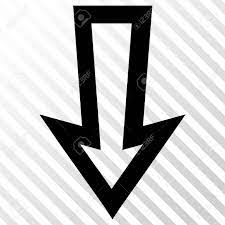

--ACERO PURO--

Resumen
Narra las aventuras de Charlie Kenton, un exboxeador muy prometedor en su juventud convertido ahora en el típico perdedor que parece amargar y destruir todo lo que toca. Dedicado al negocio de los robots luchadores, como forma de mantener el contacto con un mundo que domina, que son un fenómeno de masas en este futuro fictício, nuestro protagonista esta ahogado en deudas y sin perspectivas de futuro. Es en ese momento que fallece su exmujer dejándole a cargo de Max, su hijo de once años al que no conoce y nunca ha prestado la menos atención.
Sin situarnos en el tiempo ni tampoco ponernos en antecedentes de la época ni tampoco del entorno, Acero puro opta por irnos ubicando progresivamente durante la trama con sorprendente habilidad, centrándose en la historia en sí misma y en la evolución de las relaciones entre personajes, principalmente la de Charlie con su hijo, en vez de caer en la tentación de narrarnos la evolución sufrida por el mundo respecto al que nosotros conocemos.
Destacable escena inicial en que se enfrentan, en un ruedo de rodeo americano, un robot y un toro, recordándonos el primero a los mejores recortadores españoles zafándose del animal con gran habilidad, hasta que la situación se tuerce una vez más por la mala cabeza del protagonista.
Como era de esperar de la factoría Disney, Acero puro goza de unos efectos especiales impresionantes, que le valieron una nominación al Oscar este 2012 para Erik Nash, John Rosengrant, Danny Gordon Taylor y Swen Gillberg, brindándonos un sinfín de espectaculares luchas frenéticas a muerte entre robots a cuál más visualmente atrayente, y de creciente emoción, evitando con gran habilidad que éstas absorban el protagonismo en el filme, que se mantiene en todo momento centrado el los personajes.
En cuanto a los actores, buen papel de Hugh Jackman, que eficazmente transmite un alto grado de emociones durante toda la progresiva evolución de su personaje a lo largo del filme, y más que digna actuación de Dakota Goyo en el papel de hijo, que en diversos momentos nos recuerda descaradamente al ídolo juvenil Justin Beaver y no solo por su parecido físico, claramente intencionado. Destacar aparte la presencia de la actriz Evangeline Lilly, en un tierno papel, que conocemos como la dura Kate de la serie Lost (2004-2010).
En resumen, Acero puro, que cuenta con el genial Steven Spielberg en la producción ejecutiva, demostrando su olfato por lo comercial, es un buen filme excelentemente realizado con toques ligeros del clásico del boxeo Rocky (1976) y buenos actores. A pesar de que el guión de fondo no es en absoluto nuevo, la película consigue perfectamente conectarnos con los personajes, e incluso hacernos sufrir amargamente en las brutales peleas entre robots, para acabar emocionándonos intencionadamente y arrancándonos una sonrisa inevitablemente, y quizás incluso una lagrimita a los más sentimentales.
Sin situarnos en el tiempo ni tampoco ponernos en antecedentes de la época ni tampoco del entorno, Acero puro opta por irnos ubicando progresivamente durante la trama con sorprendente habilidad, centrándose en la historia en sí misma y en la evolución de las relaciones entre personajes, principalmente la de Charlie con su hijo, en vez de caer en la tentación de narrarnos la evolución sufrida por el mundo respecto al que nosotros conocemos.
Destacable escena inicial en que se enfrentan, en un ruedo de rodeo americano, un robot y un toro, recordándonos el primero a los mejores recortadores españoles zafándose del animal con gran habilidad, hasta que la situación se tuerce una vez más por la mala cabeza del protagonista.
Como era de esperar de la factoría Disney, Acero puro goza de unos efectos especiales impresionantes, que le valieron una nominación al Oscar este 2012 para Erik Nash, John Rosengrant, Danny Gordon Taylor y Swen Gillberg, brindándonos un sinfín de espectaculares luchas frenéticas a muerte entre robots a cuál más visualmente atrayente, y de creciente emoción, evitando con gran habilidad que éstas absorban el protagonismo en el filme, que se mantiene en todo momento centrado el los personajes.
En cuanto a los actores, buen papel de Hugh Jackman, que eficazmente transmite un alto grado de emociones durante toda la progresiva evolución de su personaje a lo largo del filme, y más que digna actuación de Dakota Goyo en el papel de hijo, que en diversos momentos nos recuerda descaradamente al ídolo juvenil Justin Beaver y no solo por su parecido físico, claramente intencionado. Destacar aparte la presencia de la actriz Evangeline Lilly, en un tierno papel, que conocemos como la dura Kate de la serie Lost (2004-2010).
En resumen, Acero puro, que cuenta con el genial Steven Spielberg en la producción ejecutiva, demostrando su olfato por lo comercial, es un buen filme excelentemente realizado con toques ligeros del clásico del boxeo Rocky (1976) y buenos actores. A pesar de que el guión de fondo no es en absoluto nuevo, la película consigue perfectamente conectarnos con los personajes, e incluso hacernos sufrir amargamente en las brutales peleas entre robots, para acabar emocionándonos intencionadamente y arrancándonos una sonrisa inevitablemente, y quizás incluso una lagrimita a los más sentimentales.
REPARTO
DIRECTOR------------------------------------------------------------------------------------VALORACION
